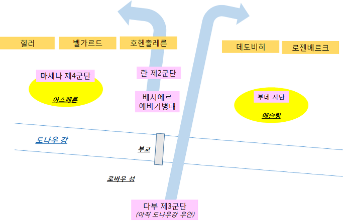
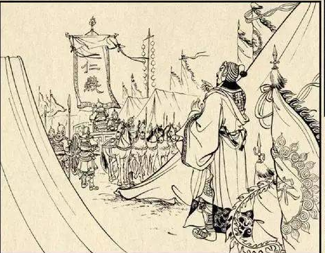
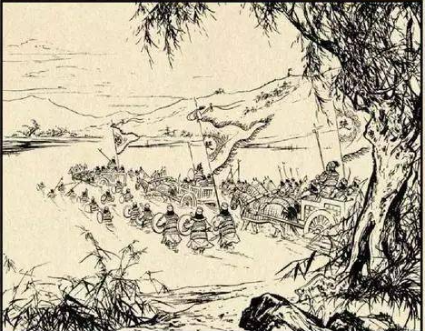
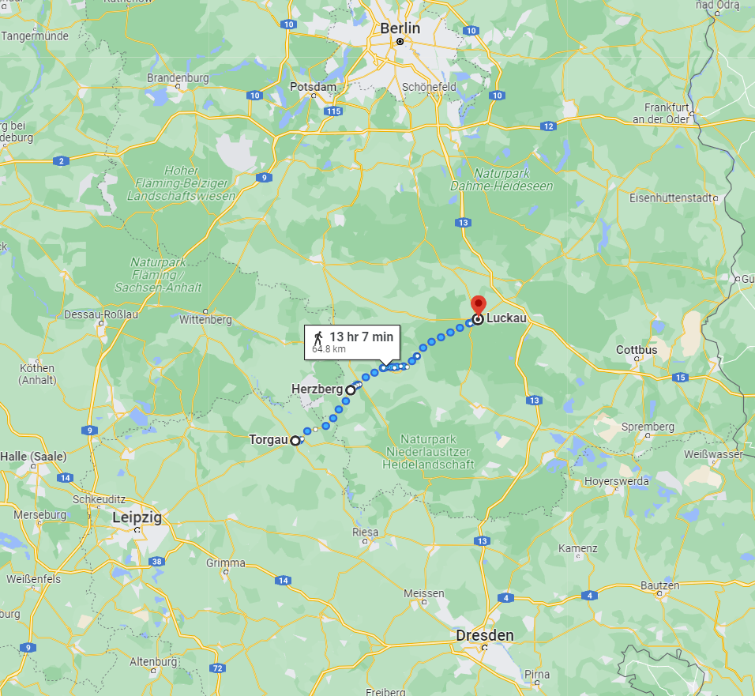
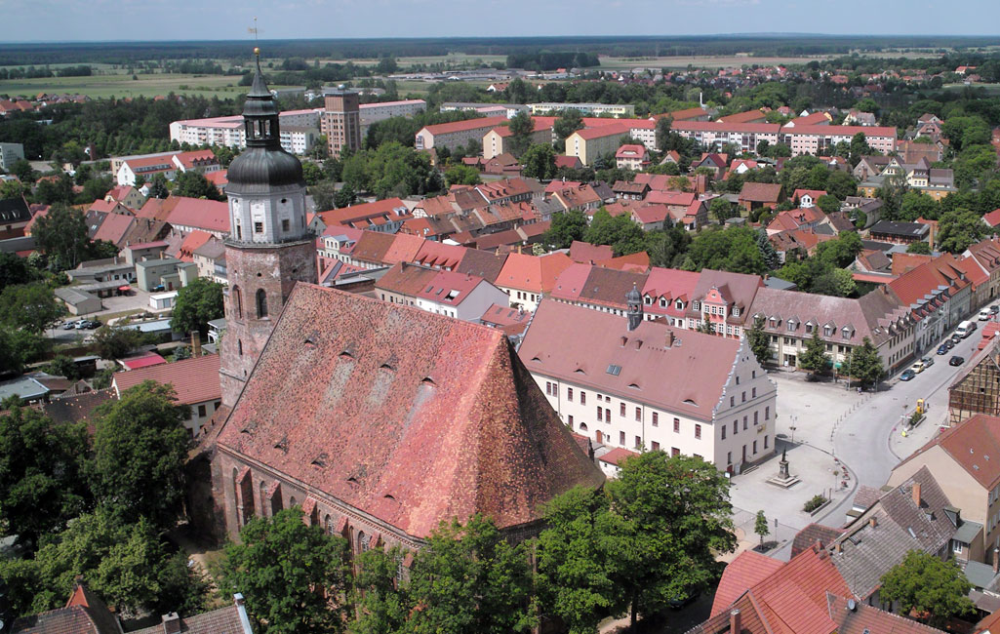
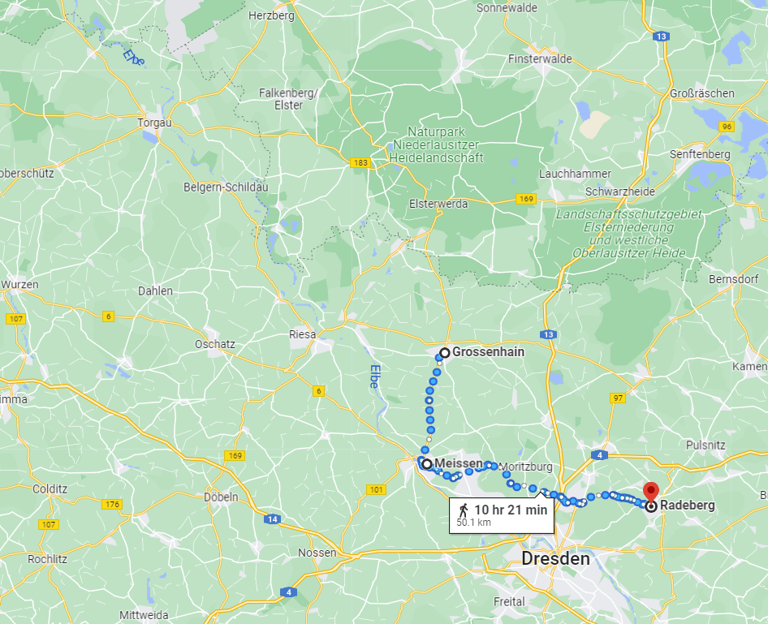
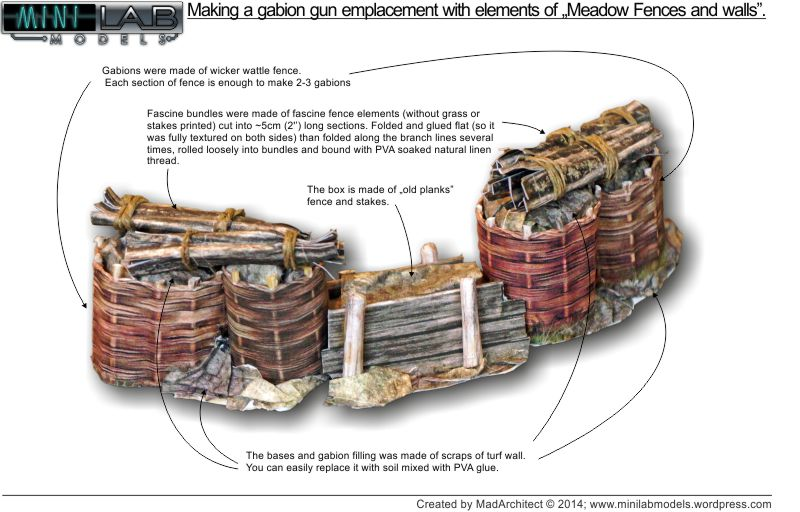

바우첸을 향하여 (4) - 엘베 강 양쪽의 고민
게시: 2023-01-02T06:30:01+09:00
엘베 강을 건너 한숨 돌린 연합군은 이제 무엇을 해야 했을까요? 그 질문에 대한 답을 줄 사람은 바로 총사령관 비트겐슈타인이었습니다. 그러나 비트겐슈타인도 딱히 명확한 계획이 있지는 않았습니다. 당연히 궁극적인 목표야 나폴레옹의 패배였지만, 그를 위해 구체적으로 뭘 해야 하는지는 전혀 다른 문제였습니다. 싸우지 않고 이길 방법은 없었으니 당연히 언제 어디서에선가 싸우기는 해야 했는데, 그 언제와 어디서가 문제였습니다. 일단 나폴레옹이 엘베 강을 건너 추격해 올 것이 자명했으니, 그 대응책을 마련하는 것이 급했습니다. 엘베 강을 지킬 것인가 아니면 더 유리한 조건에서 싸울 수 있는 후방으로 더 후퇴해야 하는가가 1차적인 문제였습니다. 그런데, 여기서 엘베 강을 버리고 후퇴하는 것은 매우 바보 같은 일이었습니다. 엘베 강과 같은 큰 강은 본질적으로 매우 훌륭한 방어선이었고, 이런 천혜의 방어선을 적극 활용하는 것이 명장의 기본 조건이었습니다. 게다가 이런 상황에서 참고할 만한 매우 좋은 선례도 있었습니다. 바로 1809년 아스페른-에슬링 전투였습니다.

(1809년 5월 22일 아스페른-에슬링 전투 상황입니다. 오스트리아군이 일부러 떠내려 보낸 것이든 봄철 눈 녹은 물로 인한 급류 때문이든, 아직 다부의 부대가 강을 건너기 전에 저 부교가 끊어졌을 때 이미 승패는 결정된 것이었습니다.) 공식적으로 나폴레옹의 첫 패배라고 일컬어지던 아스페른-에슬링 전투에서 오스트리아의 카알 대공이 승리할 수 있었던 것은 프랑스군의 유일한 교통로였던 도나우 강의 부교가 파괴되었기 때문이었습니다. 반면에 똑같은 카알 대공이 '드르와 드르와'라며 프랑스군이 완전히 도나우 강을 건너도록 해주고 자기 딴에는 유리한 지형에서 싸웠던 바그람 전투에서는 카알 대공이 참패를 겪었습니다. 굳이 이런 선례를 들먹이지 않더라도, 공격군이 강을 완전히 건너기 전에 그 도강 현장을 덮치는 것이 확실한 승리의 방책이었습니다.
 
(적이 도강하는 중간에 들이치는 것이 승리의 비결이라는 것은 송양지인(宋襄之仁)이라는 고사성어 덕분에 매우 유명해졌습니다. 송양공이 초성왕과 전쟁을 벌일 때, 홍수(泓水)를 건너는 초나라 군대를 공격하는 것은 군자의 도리가 아니라며 초나라 군대가 도강을 끝내고 완전히 전열을 가다듬은 다음에 싸움을 시작한 것에서 유래한 고사성어입니다. 물론 송양공은 완패했습니다.) 그러나 이게 춘추시대 이야기책을 읽는 것처럼 쉬운 것이 아니었습니다. 공격군이 바보가 아닌 이상, 긴 강변 중 어느 곳에서 건널지 미리 알려주고 강을 건너지는 않습니다. 그러니 프랑스군이 도강을 하는 중간에 그 현장을 덮치는 것은 매우 어려운 일이었습니다. 무엇보다 나폴레옹 자신이 아스페른-에슬링 및 바그람 전투의 당사자였습니다. 나폴레옹은 같은 실수를 반복하는 바보가 아니었습니다. 이미 나폴레옹은 토르가우와 비텐베르크 등 엘베 강 하류 쪽에 상당한 규모의 병력을 네의 지휘 하에 갈라 보내어, 방어하는 연합군을 헷갈리게 만들었습니다. 이렇게 나폴레옹이 드레스덴과 토르가우 양쪽으로 동시에 접근하는 것이 비트겐슈타인의 계산 능력에 심각한 부하를 주었습니다. 토르가우 쪽으로 간 네의 군단이 베를린을 향할지 아니면 남쪽으로 선회하여 드레스덴 노이슈타트에 포진한 연합군의 배후를 노릴지 알 수 없으니 비트겐슈타인은 어쩔 줄을 몰랐습니다. 덕분에 5월 5일 프로이센군의 클라이스트 장군은 비트겐슈타인으로부터 서로 다른 지시를 하는 명령을 3개나 받아 들어야 했습니다. 그나마 다음 날인 6일에는 또 다른 명령서가 날아왔습니다. 비트겐슈타인은 그야말로 멘붕 상태였던 모양입니다. 언듯 생각하면 러시아 장군인 비트겐슈타인은 프로이센의 수도 베를린이 어떻게 되건 말건 그대로 계속 러시아군이 편안함을 느끼는 브레슬라우-칼리쉬 라인을 따라 후퇴를 하려 했을 것 같습니다. 그러나 의외로 비트겐슈타인은 프로이센과의 협력을 중요하게 생각했고, 베를린이 프랑스군에게 함락되는 것을 선듯 받아들일 수가 없었습니다. 무엇보다, 토르가우로 향한 네의 군단이 베를린으로 갈지 드레스덴 배후로 나타날지 알 수가 없었습니다. 그래서 비트겐슈타인이 장고 끝에 마침내 결정한 것은 주력 부대들을 드레스덴에서 빼내어 토르가우 북동쪽인 헤르츠베르크(Herzberg)와 루카우(Luckau) 일대에 배치한다는 것이었습니다.

(헤르츠베르크는 토르가우에서 약 23km 떨어진 장소이고, 루카우는 거기서 다시 40km 이상 떨어진 장소입니다. 헤르츠베르크는 비텐베르크와 드레스덴에 걸치는 라인 중 딱 중간이라기보다는 더 비텐베르크 쪽에 가까운 장소였습니다. 따라서 정말 나폴레옹이 드레스덴에서 도강을 해버리면 제 때 현장에 도착하는 것은 불가능했습니다.)

(헤르츠베르크는 슈발츠 엘스터(Schwarze Elster, 검은 까치) 강을 끼고 있는 소도시입니다. 지금도 인구가 9천 정도에 불과합니다. 원래 작센 지방입니다만 나폴레옹 편을 들었던 작센의 땅을 빼앗아 프로이센에게 주는 빈 체제의 결정에 따라 1815년 이후 프로이센령이 되었습니다.) 이 배치안의 핵심은 엘베 강 라인을 방어한다는 것이었습니다. 비텐베르크나 토르가우 등의 엘베 강변 주요 요새들은 모두 기존부터 프랑스군 및 작센군이 장악하고 있으므로, 나폴레옹이 어디서 엘베 강을 건널지 모르는 것이 현실이었습니다. 그런 상황에서 엘베 강을 이용하여 프랑스군을 막아내려면 긴 엘베 강변에 병력을 주욱 늘어놓는 방법은 하책에 불과했습니다. 따라서 드레스덴과 비텐베르크의 중간 정도에 해당하는 헤르츠베르크와 루카우 사이에 병력을 모아놓고 있다가, 어디선가 프랑스군이 도강했다는 첩보가 들어오면 전체 병력이 도강을 마치기 전에 즉각 달려들어 결판을 내겠다는 것이었습니다. 특히 연합군은 코삭 기병대를 이용하여 부지런히 강변 정찰을 할 수 있었으니 나름대로 괜찮은 아이디어처럼 보였습니다. 그러나 정작 프로이센군 수뇌부는 이 배치안에 대해 매우 부정적이었습니다. 프로이센군은 이 안에 따를 경우 연합군의 생명줄인 브레슬라우-칼리쉬 라인을 스스로 버리는 꼴이라며 반대를 분명히 했습니다. 의도대로 헤르츠베르크에 병력을 모아놓고 있다가 프랑스군의 도강을 중간에 요격하기에는 엘베 강변이 너무 길다는 것이 사실이긴 했습니다. 만약 나폴레옹이 그냥 정석대로 드레스덴에서 도강을 강행한다면 헤르츠베르크의 연합군이 거기에 대응하기에는 너무 멀었습니다. 게다가 엘베 강변은 물론이고 오데르 방변의 글로가우 등 주요 요새들이 나폴레옹 수중에 있는 상황에서 그렇게 어정쩡한 자세를 취하다가는 연합군의 운명은 오데르 강변 어디쯤에서 괴멸되는 것 뿐이라며 강력 반발했습니다. 물론 그런 반발의 핵심에는 건방지기 짝이 없는 프로이센군의 자칭 제갈량 그나이제나우가 있었습니다. 이런 반발에 부딪히자 그 또한 일리가 있다고 생각한 비트겐슈타인은 하룻만에 작전을 변경했습니다. 이번에는 프로이센군이 도강했던 지점인 마이센(Meißen)을 기점으로 해서, 마이센부터 남쪽 드레스덴 일대는 러시아군이 담당하고 마이센부터 북쪽으로는 프로이센군이 담당하는 것으로 했습니다. 이를 위해 러시아군의 주력부대는 드레스덴에서 물러나 약간 북동쪽인 라더베르크(Radeberg)로 이동했고, 프로이센군은 그로스엔하인(Großenhain)으로 이동했습니다.

(라더베르크는 드레스덴에서, 그리고 그로스엔하인은 마이센에서 각각 약 16~17km, 즉 3~4시간 거리였습니다.) 그럼에도 불구하고 여전히 프로이센군은 불만이 많았습니다. 나폴레옹이 베레지나 강을 건널 때처럼 한 장소에서 도강을 시도하려는 것처럼 허장성세를 꾸미다가 러시아군과 프로이센군이 그 방향으로 우르르 몰려가면, 그때 정작 다른 장소에서 전격적으로 도강해버리면 방법이 없다는 것이었습니다. 맞는 말이긴 했지만 그렇다고 프로이센군에게 뾰족한 별다른 묘수가 있는 것도 아니었습니다. 심지어 비트겐슈타인이 몇몇 유력한 프랑스군 도강 지점을 지정하고 거기에 포병대를 일부 배치하면서, 엄폐된 포병 진지 구축을 위해 망태기와 나뭇가지 등을 수집하라고 명령을 내린 것에 대해서도 꼬투리를 잡았습니다. 사실 비트겐슈타인의 그런 지시는 매우 적절한 것이었습니다만, 프로이센군은 '프랑스군이 어디서 도강하든 즉각 기동전을 펼쳐 섬멸하겠다면서 고정된 포병 진지를 구축하는 것은 또 뭐냐'라며 비트겐슈타인은 우유부단하다고 툴툴거렸습니다. 연합군 간의 이런 불신과 멸시는 지속적으로 문제를 일으켰습니다.

(적군이 강을 건널 만한 지점에 미리 포병대를 배치하고 그 대포들을 보호할 엄폐진지를 구축하는 것은 결코 나쁜 일은 아니었습니다. 잘 보호된 포병 진지는 적 포병대와의 대결에서 결정적인 우위를 가져다 주기 때문입니다. 당시 포병 진지는 저런 망태기(gabion)을 이용하여 흙과 돌을 쌓아올려 만들었습니다.)
이렇게 연합군이 옥신각신 하는 동안, 나폴레옹도 어디서 강을 건너야 할지 고민이 많았습니다. 그런데, 나폴레옹의 고민은 어이없이 해결되고 맙니다. 그나이제나우가 평소 부당하게 러시아군을 바보 취급했다고 했는데, 러시아군이 정말 바보짓을 했기 때문이었습니다. Source : The Life of Napoleon Bonaparte, by William Milligan Sloane Napoleon and the Struggle for Germany, by Leggiere, Michael V
https://ag-historische-stadtkerne.de/historische-stadtkerne/herzberg-elster/ https://en.wikipedia.org/wiki/Herzberg_(Elster) https://twitter.com/CarlZha/status/1587650448458014720
https://minilabmodels.files.wordpress.com/2014/04/20120405_mfnw_abion_gun_emplacement.jpg
{kind=link}